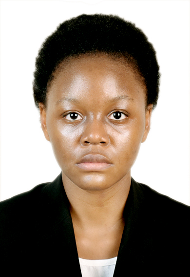

Computer Science, Year 1, Uganda Christian University, Mukono, Uganda.

I am a first-year Computer Science student at Uganda Christian University in Mukono, Uganda. I am curious about how computers and software work, and I am building my foundation in computing one unit at a time. Outside class, I enjoy listening to music, and recharging so I can stay focused on my studies.
I aspire to become a cybersecurity officer who protects organizations and ordinary people from online threats. I want to help keep data safe as more of our lives move online and inspire younger girls all over the world to pursue technology related education.
Email: skycinderella22@gmail.com
GitHub: https://github.com/skycinderella